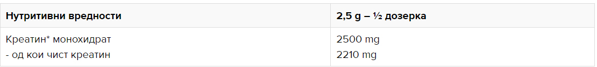

Креатин-монохидратот предизвика бум во спортот во 1990-тите години. Креатинската залиха е одговорна за префрлање на фосфатната единица и претварање на истата во ATP (аденозин трифосфат),со што обезбедува регенерација и нова енергија за градење на мускули. Креатинот е практично еден молекул кој складира енергија. Креатинот ја зголемува физичката активност во последователни кратки и интензивни вежби
